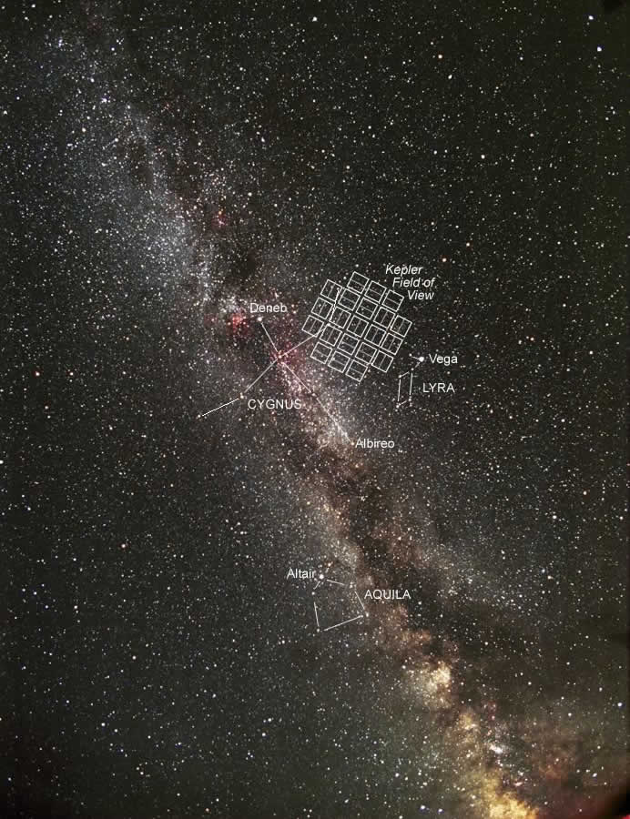
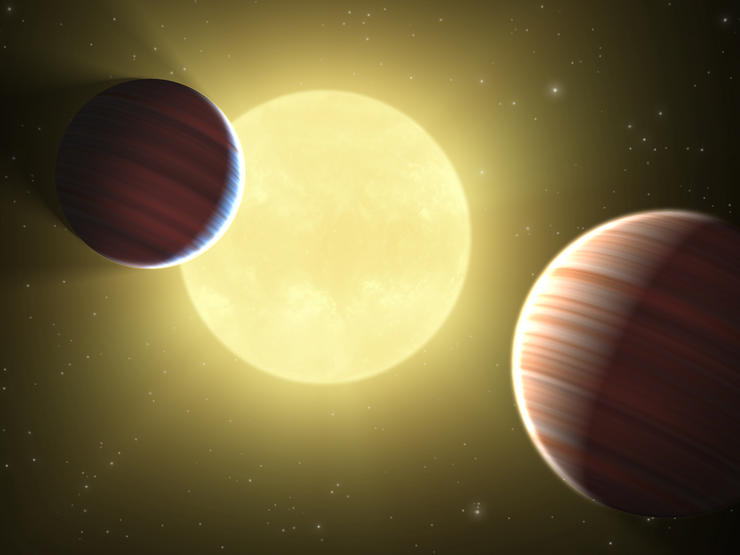

About the Kepler space mission
Jump to
- Introduction
- History
- The telescope
- The orbit of Kepler
- The Kepler field and targets
- Launch and chronology
- Kepler operations and observations
- Kepler results
Kepler is a Discovery-mission of NASA. It was successfully launched in March, 2009. The mission aims at finding a statistically meaningful sample of Earth-size planets in the habitable zone via transit detection. The Kepler field is a fixed, 105 sq. degree low galactic latitude field, which is planned to be monitored continuously for up to 6 years with a 95 cm Schmidt telescope in Earth-trailing orbit. This will guarantee an unprecedented photometric accuracy and homogeneity. The planet search is complemented by asteroseismology research that helps to characterize the host stars and the planetary systems themselves. There is a plethora of additional science investigations benefiting from the previously unimaginable quality of photometric data. The mission is named after the famous mathematician and astronomer, Johannes Kepler (1571-1630), who found the eponymous laws of planetary motions. The results of the Kepler Mission will take us a step closer to answering the philosophical question: are we alone in the Universe?
The Kepler Mission developed over several decades. A paper by Rosenblatt (1971) provided a quantitative discussion of the transit method: searching for patterns of transits to get planetary size and orbital period. Another paper by Borucki and Summers (1984) corrected the detection probability and pointed out that ground-based observations of at least 13,000 stars simultaneously should be sufficient to detect jovian-size planets, but that the detection of Earth-size planets would require space-based observations. During the eighties NASA funded the development and testing of proof-of-concept multichannel photometers based on silicon photodiodes. Later the design was modified to include CCD cameras. The predecessor of Kepler was first proposed to NASA in 1992, at the time called FRESIP (FRequency of Earth-Size Inner Planets). Several proposals were submitted during the nineties; the group had to prove that simultaneous high-precision photometry of a large number of stars is feasible from the ground, therefore a technology demonstration instrument (photometer) was built. It was located at the Lick Observatory and was operated remotely. Finally NASA approved the Kepler Mission in 2001. A more detailed history of Kepler can be found here from William Borucki, the Principal Investigator of the Kepler Mission.
The Kepler instrument is a 0.95-m aperture Schmidt-telescope, with a 1.4-m diameter main mirror.
It has a wide, 105 square degrees (about 12 degree diameter) field-of-view, making it capable of
observing more than 150,000 relatively bright stars continuously and simultaneously for at least 3.5 years.
The mission was designed to work for at least
6 years, so an extension is possible to find smaller planets and planets in orbits with larger periods.
The telescope feeds an array of 42 CCDs (charge coupled devices) arranged in a characteristic cross-shape and
located in the focal plane inside the telescope. Each CCD has 2200x1024 pixels which are read out every 6 seconds
to prevent saturation. The instrument observes in white light, that is in the visual part of the spectrum.
The CCDs are not used to take pictures, only selected pixels around pre-selected targets are downloaded.
This number of downloaded pixels is 5% of the total pixel number. However, for technical reasons full frame
images (FFIs) are taken monthly. The images are intentionally defocused to improve the photometric precision.
 The detector array in the lab. Credit: NASA
The detector array in the lab. Credit: NASA
The continuous viewing needed for a high detection efficiency for planetary transits requires that the field-of-view of the photometer be out of the ecliptic plane so as not to be blocked periodically by the Sun or the Moon. A star field near the galactic plane that meets these viewing constraints and has a sufficiently high star density has been selected. An Earth-trailing heliocentric orbit with a period of 372.5 days provides the optimum approach to meeting of the combined Sun-Earth-Moon avoidance criteria. In this orbit the spacecraft slowly drifts away from the Earth and is at a distance of 0.5 AU at the end of four years. The bandwidth available to transmit data to Earth is decreasing with time because of the position of the spacecraft. In order to maximize the illumination of the solar panels, the telescope is rotated by 90 degrees quarterly. Thanks to the symmetric arrangement of the CCDs, the field-of-view remains the same, but the targes fall on different CCD chips and pixels. Quarter zero (Q0) was dedicated to a 10-day commissioning phase, Q1 was an incomplete (33-d) quarter, and Q2 was the first full quarter.
The instrument has the sensitivity to detect an Earth-size transit of an mV=12 G2V (solar-like) star at
4 sigma in 6.5 hours of integration. In order to maximize the number of transit detections a large field-of-view
was chosen a few degrees above the galactic plane, at the border of Cygnus and Lyra constellations and
touching a small portion of Draco. The field contains three exoplanets discovered before the Kepler Mission,
these are: TReS-2, HAT-P-7b and HAT-P-11b. It also worth noting that 4 open clusters are observable by Kepler:
NGC 6819, NGC 6811, the very old NGC 6791, and NGC 6866, the youngest of the four. In addition,
1879 eclipsing binaries were discovered by analysing early Kepler data.

Credit: Carter Roberts
The 105 square degree field is large enough to contain a
large number of solar-like stars, and its position prevents serious blending issues at the same time. The 156,000
main targets are between 9th-16th magnitudes, while the telescope can observe objects as faint as
20th magnitude.
Although 7th magnitude stars are seriously saturated, precise photometry is possible in this brightness
range as well, because the flux is conserved to a very high degree. The images are intentionally defocused to 4 arcseconds
to improve the photometric precision. The exposure time is 6 seconds, and 30 minutes of data are integrated (long
cadence, LC) before the monthly regular data download. However, a small number of targets are available for a much higher
sampling rate, the photometric measurements of 1 minute are integrated for these short cadence (SC) targets.
 Credit: NASA/Kim Shiflett
Credit: NASA/Kim Shiflett
- - 2009 March 7 launch from Cape Canaveral on top of a Delta-II rocket
- - 2009 April 8 first light
- - 2009 May 12 start of scientific observations
- - 2009 August First results on known exoplanets and Kepler performance
- - 2010 January Announcement of the first exoplanets
- - 2010 June Release of 306 planetary candidates
- - 2010 August First multiple transiting exoplanet system discovered (Kepler-9b and -9c)
- - 2011 January Kepler finds the first rocky exoplanet (Kepler-10b)
- - 2011 February Discovery of Kepler-11b, the first planetary system with 6 transiting planets
- - 2011 February Release of 1235 planetary candidates
- - 2011 December First Kepler Science Conference
- - 2012 February The number of released planetary candidates increases to 2321
- - 2012 April The Kepler Mission has been extended by 4 years
- - 2012 November Extended mission begins
Kepler operations and observations
Mission operations involve several organizations, including: NASA's Ames Research Center, Moffett Field,
Calif., which conducts Mission management and operates the Science Operations Center (SOC) and the Kepler
Science Office (SO); the Laboratory for Atmospheric and Space Physics (LASP), Ball Aerospace & Technologies Corp.,
NASA's Jet Propulsion Laboratory, and the Space Telescope Science Institute (STScI) in Baltimore, Md.
Telecommunications and navigation for the mission are provided by NASA's Deep Space Network (DSN).
Kepler observes for three different kinds of observers:
(1) Planets are searched for around 150,000 solar-like main sequence stars. The reduction of the
raw Kepler data and subsequent data processing is done by the Kepler Science Office. The planet search,
ranking, follow-up observations and interpretation are performed by the Kepler Science Team and collaborators.
(2) The Kepler Asteroseismic Science Consortium (KASC)
investigates stellar pulsation and oscillations in ~6000 Kepler targets. The asteroseismological results support
the planetary research by providing precise radius, mass and age of stars harboring planets.
All kinds of pulsating stars are observed as well with exquisite precision and continuity.
(3)
Anyone can apply for Kepler observations of non-planetary targets (eclipsing binaries, active stars,
cataclysmic variables, active galactic nuclei, just to mention a few) through the Kepler Guest Observer Program
(GO) on a yearly base. There are 3000 long-cadence
and 25 short-cadence slots reserved for this purpose.
HAT-P-7b
 Credit: NASA
Credit: NASA
Soon after starting scientific observations, Kepler demonstrated its capabilities by observing an exoplanet
that was discovered before the launch of Kepler, HAT-P-7b. Kepler not only discovered the secondary eclipses (when the
planet disappears behind its host star), but found a slowly varying brightness of the system, which is explained
by the phase variations of this hot-Jupiter type planet. The phenomenon is similar to the changing phases of the
inner planets in our Solar System: Mercury and Venus. This measurement proved that Kepler attained the photometric
precision necessary to find transits of Earth-size exoplanets.
The first five Kepler exoplanets
 Credit: NASA
Credit: NASA
Based on only 43 days of observations, five new exoplanets were announced: Kepler-4b, -5b, -6b, -7b and -8b.
All of them have a short period orbit ranging between 3.2 and 4.9 days. Four of them are hot Jupiters,
while Kepler-4b is a Neptune-like planet. The surface temperatures of the new planets are between 1500-2000
K.
Kepler-9: the first multiple transiting exoplanetary system

Credit: NASA
Kepler-9 is the first exoplanetary system where more than one planet transits the host star. Kepler-9b and -9c
are Saturn-size planets with orbital periods of 19 and 38 days. The 1:2 resonance implies a strong gravitational
tug between the planets. This interaction provides evidence that we see two planets orbiting the same star,
in addition it allows the precise determination of the planetary masses without ground-based spectroscopic observations.
An additional hot super-Earth was found in the system (Kepler-9d) with 1.6 d period and 1.5 Earth-radius.
Kepler's first rocky exoplanet: Kepler-10b
 Credit: NASA
Credit: NASA
Kepler-10b was the smallest rocky exoplanet at the time of its discovery. Its size is only 1.4 times
that of the Earth and has 4.6 Earth masses. Its average density is 8.8 gramm per cubic metres, which is similar to
that of the pure iron.
The host star of Kepler-10b is an old, low-activity solar-like star. The orbital period is only 20 hours, therefore
the surface temperature of the planet is some 1800 K, which implies a lava ocean instead of a solid surface.
The first exoplanetary system containing six transiting exoplanets: Kepler-11
 Credit: NASA
Credit: NASA
The remarkable Kepler-11 system contains six transiting planets, all in the super-Earth regime, with sizes between
2.0 and 4.5 Earth radius. This is a fully packed and surprisingly flat planetary system, where all the members
are within the Venus orbit if we compare it to our Solar System. The orbital periods are between 10 and 47 days
for the inner five planets, while Kepler-11g transits the Sun-like star every 118 days. The finding carries
important information about the formation, evolution and dynamics of planetary systems.
1235 planetary candidates released
Credit: NASA
On 2 February, 2011, NASA released a breathtaking list of 1235 planetary candidates. The list is available
at the MAST database. According to various estimates, about 50-80% of
the transiting candidates may turn out to be planets. Among the candidates there are 170 multiple planetary systems,
68 Earth-size planets (some of them are even smaller, down to the size fo Mars), 54 orbiting in the habitable zone,
meaning that they may have liquid water on their surface. Five Earth-size planetary candidates were found in the
habitable zone of their host-star. These stars are smaller and fainter than our Sun. Earth-like planets around
solar-like stars (the Holy Grails of present-day astronomy) are expected to be found later during the mission.
These five objects are currently the most interesting ones, with the potential of harbouring life of some kind.
In the next figure the sizes of the planetary candidates are shown as a function of their orbital periods.
Credit: NASA
Links to more results, papers and discoveries:
Papers on Kepler discoveries
Exoplanet science with Kepler
Non-exoplanet Kepler astrophysics
Kepler Science
Operations Center technical papers